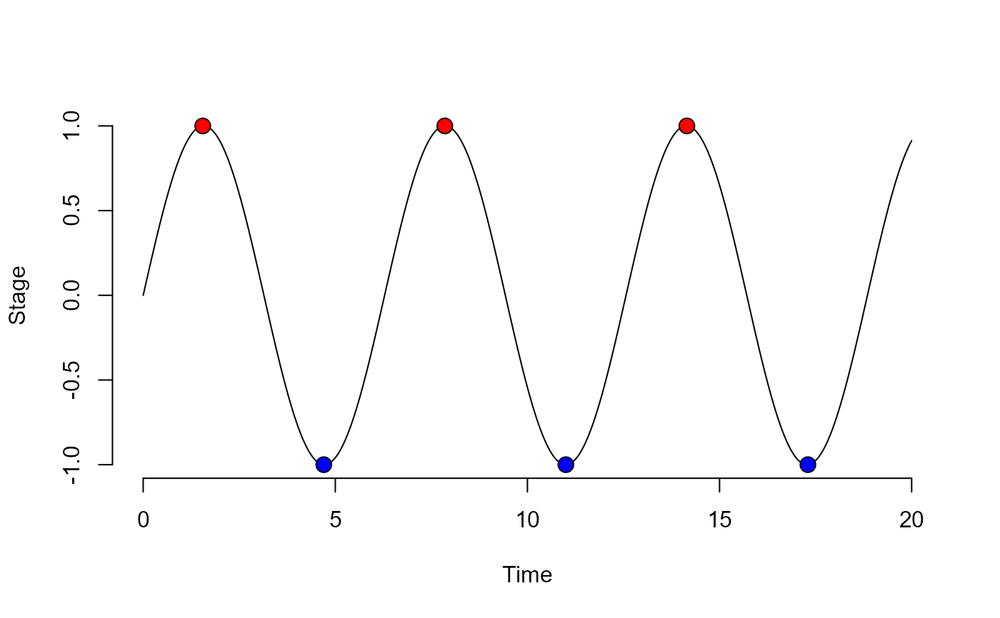

A peak detection algorithm for R; finds local maxima and minima. Based on an algorithm for MATLAB by Eli Billauer (http://www.billauer.co.il/peakdet.html).
A list containing two data frames maxtab and mintab containing maxima and minima. Data frames contain two columns with indices in v (or corresponding values in x if provided) and values in v.
Arguments
- v
a numeric vector where to search peaks.
- delta
numeric of length one; defining the local threshold for peak detection.
- x
a numeric vector the same length as v containing corresponding x-values for v.
Examples
x <- seq(0, 20, .05)
vals <- sin(x)
det <- peakDet(vals, .5, x)
det
#> $maxtab
#> pos val
#> 1 1.55 0.9997838
#> 2 7.85 0.9999921
#> 3 14.15 0.9999177
#>
#> $mintab
#> pos val
#> 1 4.7 -0.9999233
#> 2 11.0 -0.9999902
#> 3 17.3 -0.9997744
#>
plot(x = x, y = vals, frame = FALSE, xlab = 'Time', ylab = 'Stage', type = 'l');
points(det$maxtab$val~det$maxtab$pos, bg = 'red', pch = 21, col = 'black',
lwd = 0.9, cex = 1.5);
points(det$mintab$val~det$mintab$pos, bg = 'blue', pch = 21, col = 'black',
lwd = 0.9, cex = 1.5)
